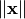
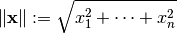
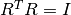
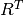
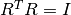
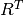
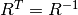
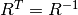
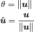

is a unit
vector. The angle is
is a unit
vector. The angle is  . The rotation vector is a
more compact representation of and
.
. The rotation vector is a
more compact representation of and
.Also called Euclidean length, or L2 norm. The Euclidean norm
 of a vector  is given by:
is given by:

Pure Pythagoras.
 is the real part of the quaternion and the vector
is the real part of the quaternion and the vector
 is the vector part of the quaternion. Quaternions are
less intuitive to visualize than Euler angles but do not
suffer from gimbal lock and are often used for rapid
interpolation of rotations.
is the vector part of the quaternion. Quaternions are
less intuitive to visualize than Euler angles but do not
suffer from gimbal lock and are often used for rapid
interpolation of rotations. has columns
and rows that are unit vector, and where  ( is
the transpose and
has columns
and rows that are unit vector, and where  ( is
the transpose and  is the identity matrix). Therefore  (
is the identity matrix). Therefore  ( is the inverse). Rotation matrices also have a
determinant of
is the inverse). Rotation matrices also have a
determinant of  .
.A representation of an axis angle rotation. The angle
and unit vector axis are stored in a
rotation vector  , such that:
, such that:

where  is the Euclidean norm of
is the Euclidean norm of
with a Euclidean norm
of 1. Normalized vector is a synonym. The “hat” over the
is a convention to express the fact that it
is a unit vector.